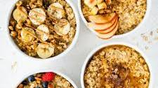

Oatmeal

This is oatmeal, a delicious meal
This is oatmeal, which decidedly does not contain cheese (often). Despite this, it is an acceptable morning meal on occassion.
Ingredients Required
- Chocolate
- Cinammon
- Oats
- Extra chocolate
- Bananas (sometimes)
Steps to prepare
- Add all chocolate to bowl
- Snack on it for a bit
- Heat a bit up with remaining ingredients
- Enjoy!